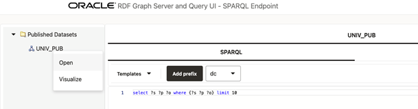

14.3.2.9 Published Dataset Playground
You can explore the published RDF datasets from a public web page.
You can access the page using the following URL format:
{protocol}://{host}:{port}/{app_name}/public.html
For example:
http://localhost:7101/orardf/public.html
The public web page is displayed as shown:
The main components of this public page are:
- Published Datasets: contains the names of the
published RDF datasets for public RDF data source. To open the RDF dataset double
click it or right click the tree dataset and execute the Open menu item as
shown:
Figure 14-43 Opening a Published Dataset on the Public Page

Description of "Figure 14-43 Opening a Published Dataset on the Public Page " - The tab panel on the right allows you to execute SPARQL queries against
the published RDF dataset. SPARQL query results are displayed in tabular as well as
graph view formats. However, if the Accessibility switch on
the top right corner of the page is switched
ON, then the results are only displayed in tabular format.The following options are supported in the tab panel:
- Templates: SPARQL template queries to use.
- Add prefix: click to add the selected prefix in the combo box to a SPARQL query.
- SPARQL: enter the SPARQL to be executed in the text area.
- select/ask: select the output format for
SPARQL
SELECTand SPARQLASKqueries. - construct/describe: select the output
format for SPARQL
CONSTRUCTand SPARQLDESCRIBEqueries. - Execute: click this button to execute the SPARQL query against the RDF public endpoint.
- Table: shows the result in a tabular format.
- Raw: shows the raw SPARQL result on specified format returned from server.
- Download: click to download the raw response.
Parent topic: RDF Data Page